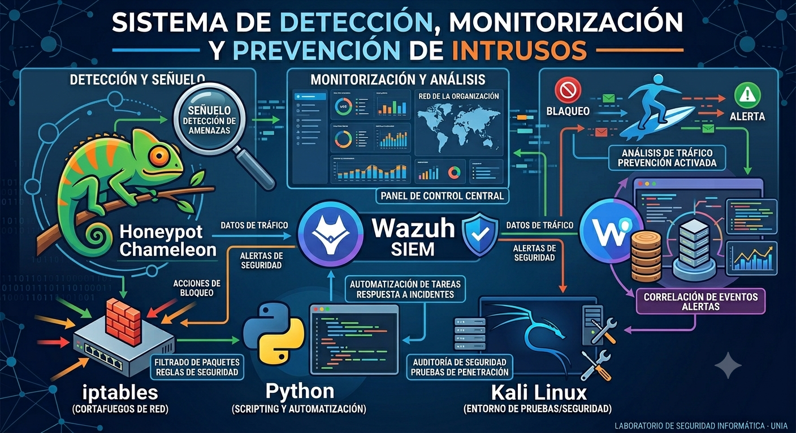
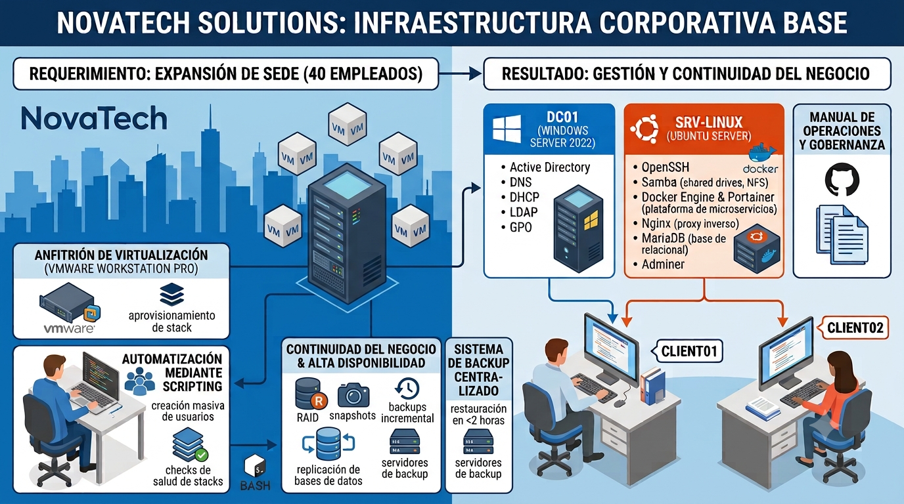

"Me formé en administración de sistemas, redes y ciberseguridad. Para mi Proyecto de Fin de Grado, implementé desde cero un laboratorio completo de detección, monitorización y prevención de intrusos — conectando Suricata, Wazuh y automatización en Python sobre infraestructura virtualizada."
Busco mi primer rol en IT, empezando por sistemas, soporte o infraestructura, con la idea clara de crecer hacia el Blue Team. Este portfolio reúne los laboratorios que voy construyendo. La mejor forma de ver cómo trabajo, más allá de un CV.
Mi relación con la informática nació de la curiosidad de entender cómo funcionan los sistemas por dentro. Antes de estudiar ya llevaba años formándome de manera autodidacta, montando, formateando y reparando mis propios equipos. Esa base práctica me llevó a formarme de manera reglada en el sector.
Esa base se puso a prueba en mis prácticas en Normicro, donde migré un servidor Pandora FMS completo, con su base de datos, desde un sistema operativo Linux obsoleto que ya no se podía actualizar hacia uno más actual, sin pérdida de datos ni interrupción del servicio.
También evalué PRTG Network Monitor con SNMP y NetFlow, y Wireshark como herramienta complementaria, documentando la viabilidad de ambas para la empresa. Participé además en el diagnóstico de averías en sistemas y hardware junto a un técnico senior, y redacté las guías técnicas de cada proceso.
Llevo más de diez años compaginando trabajo y formación, lo que me ha enseñado a organizarme, cumplir plazos y asumir responsabilidades por mi cuenta.
La curiosidad de siempre, la formación reglada y el trabajo real en Normicro son la base con la que sigo construyendo los laboratorios que ves a continuación.


Disponible para entrevistas técnicas y procesos de selección en Bizkaia o en remoto. Si buscas a alguien metódica, con ganas y en quien confiar la estabilidad de tus sistemas, escríbeme.